第 00 页 / 共 07 页
引言
你知道中国现存
有多少只东北虎吗？
有多少只东北虎吗？
0只野生东北虎
人类说，一百年前全世界有近十万只我的同类，而今天，只剩下约5574只。我们曾纵横整个亚洲大陆，如今蜷缩在不到历史栖息地8%的破碎角落。作为顶级掠食者、亚洲森林的旗舰物种，我们正在从地球上加速消失。而我的家乡——中国东北，在这片黯淡的图景中，投下了一束独特的光芒。
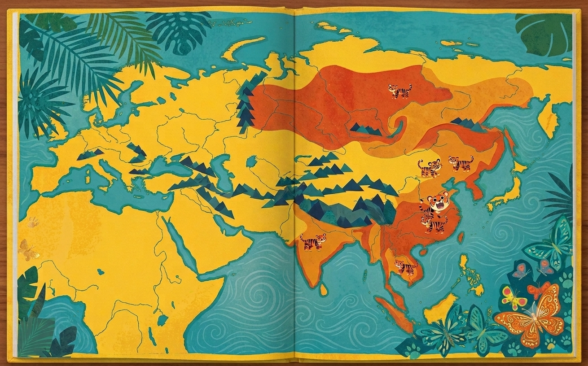
种群回声
从 27 到 70
我听巡护员说，2015年，中国野生东北虎只有27只。到2025年，这个数字变成了约70只。十年，2.6倍的增长。他们还说，在全球老虎分布国中，不丹、中国、印度、尼泊尔、俄罗斯和泰国的老虎数量正在恢复，而中国的保护成果已全面超越了老虎保护峰会提出的目标。世界自然基金会全球总干事克思婷·斯海特评价道：“这些成功并非偶然，而是全球老虎分布国政府、保护组织和全球合作伙伴数十年的保护努力、坚定承诺和行动的结果。”
0全球野生虎约数
0%仅存历史栖息地
0→0中国十年种群变化
0倍十年增长
那么，我的家乡——中国东北虎的保护经验，在全球老虎保护事业中到底处于怎样的位置？又能为世界提供哪些智慧？我虽然是一只老虎，但这些问题，我也想试着回答。
第一章
全球野生虎主要分布在13个国家。根据全球老虎论坛的最新数据，印度以约3682只位居第一，占全球总数的约75%；俄罗斯东北虎数量约为480-540只（官方说750只，口径不同）；中国野生东北虎稳定在70只左右。论绝对数量，我的家族在全球并不靠前，但在东北虎这一濒危亚种的保护进程中，中国正扮演着越来越重要的角色。
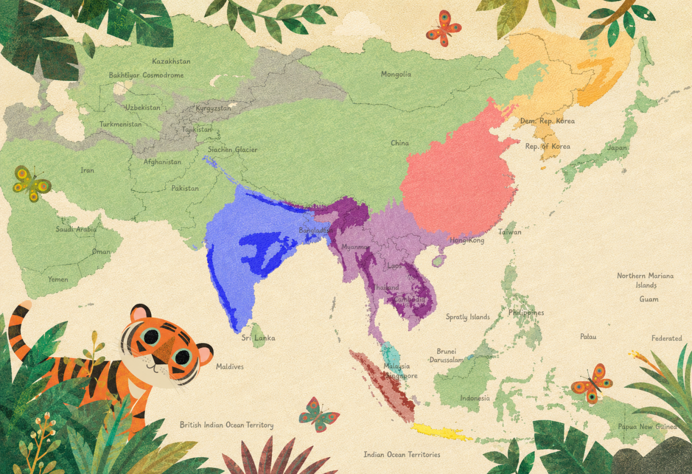
点击地图光点或国家按钮查看完整保护信息；点击地图本身可放大。
全球保护坐标
全球图景中的中国坐标
俄罗斯的东北虎保护起步更早。它们从上世纪40年代就开始干预，50年代全面禁猎并设立保护区，2005年普查时约331-393只，2015年增至480-540只，到2025年已接近750只。俄罗斯的模式是早干预、连片保护——在锡霍特-阿林等大面积栖息地内，通过禁猎和投放饲料维持高密度猎物，辅以严格的刑事追责，实现了从不足200只到超过700只的跨越。
.png)
.png)
相比之下，我的家乡起点低得多。1990年代末，中国野生东北虎不足20只，基本濒临区域性功能灭绝。但正是从这样一个几乎“归零”的起点出发，中国用了不到十年实现了超过2.6倍的种群增长。这背后是一个从零重建破碎化栖息地的艰巨工程——中国东北林区经历过长期林业开发与栖息地分割，修复难度远高于地广人稀的俄罗斯远东。
在全球老虎保护的大图景中，中国的特殊性正在凸显。印度虽然拥有最多的老虎，但面临着“成功的悖论”——保护区饱和、人虎冲突加剧，约30%的老虎生活在保护区外，越来越多的同类与人类“挤在”同一片土地上。东南亚大部分地区的老虎数量则在持续下降，过去20年已有三个国家彻底失去了野生虎。而中国，尽管数量有限，却在以一种系统性的方式，探索一条兼顾种群恢复与人虎和谐的独特道路。
第二章 · 俄罗斯
当我们老虎的种群开始复苏，“如何与人类共存”的问题便随之浮现。这是全球13个老虎分布国面临的共同命题，但不同国家给出的答案不尽相同，其间的经验教训值得深入思考。
🐾 01 俄罗斯模式：地广人稀的优势
俄罗斯的同类生活在远东地区广袤的原始针阔混交林中，该地区地广人稀，森林开发压力相对较小。俄罗斯的保护策略侧重于栖息地的连片保护和严格执法：在全国范围内建立了覆盖25%东北虎栖息地的特别自然保护区，强化刑事追责打击盗猎，并通过卫星跟踪、红外相机等科技手段持续监测种群动态。在长期严格保护下，东北虎在俄罗斯已不再面临灭绝的直接风险。
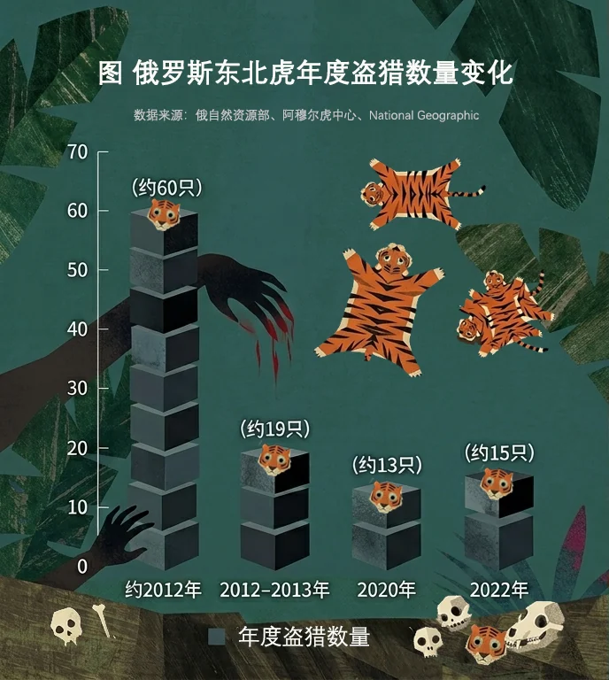
那里的优势在于地理空间——锡霍特-阿林山脉延绵数千平方公里，森林连片、人类活动稀少，是天然的巨大庇护所。但俄罗斯也并非高枕无忧：盗猎与非法贸易仍是长期威胁，栖息地的完整性和连通性需要持续维护。
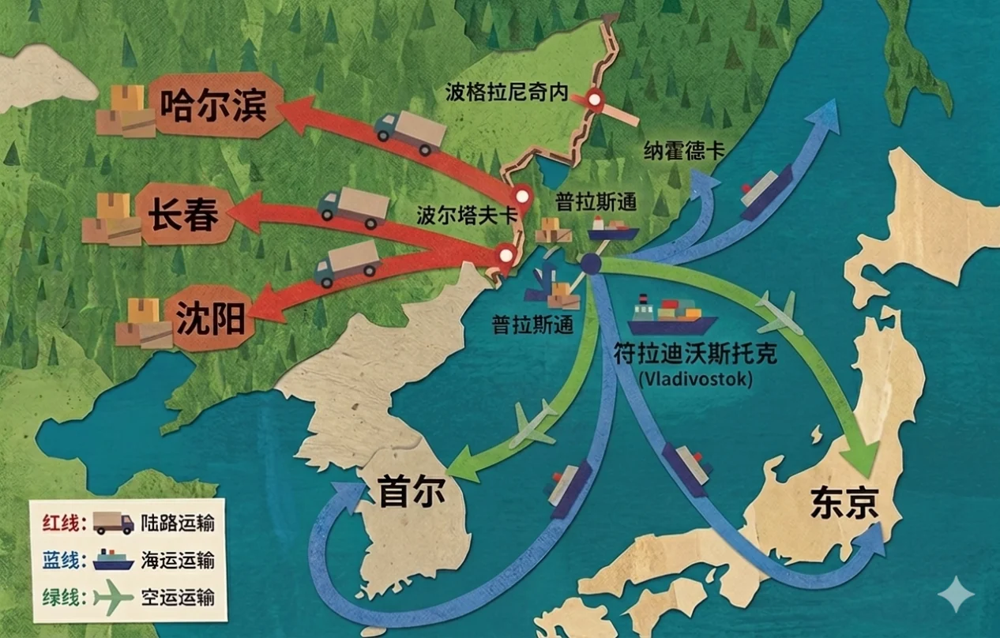
第二章 · 印度
🐅 02 印度模式：成功的代价
印度是全球老虎保护的“明星案例”。2025年其野生虎数量达到3682只，占全球总数的约75%，较2006年的1411只实现翻倍增长。印度的策略是“严格保护地+多用途共享景观”的双轨制：部分区域作为核心保护区严格管理，外围区域则允许人类与老虎共同利用土地资源。这种模式兼具了种群保护和社区共存的灵活性。
然而，成功的背面是沉重的代价。2025年，印度一年内就有166只老虎死亡，比2024年的126只猛增40只，创下近年来最高纪录。死亡原因包括栖息地竞争、人虎冲突、偷猎、触电、路撞等，其中人虎冲突和领地争斗占据了显著比例。约30%-40%的老虎生活在保护区外，面临着更高的偷猎风险和更频繁的人兽冲突。
2025年印度全国老虎死亡数：166只悬停或点击柱状分段查看原因占比
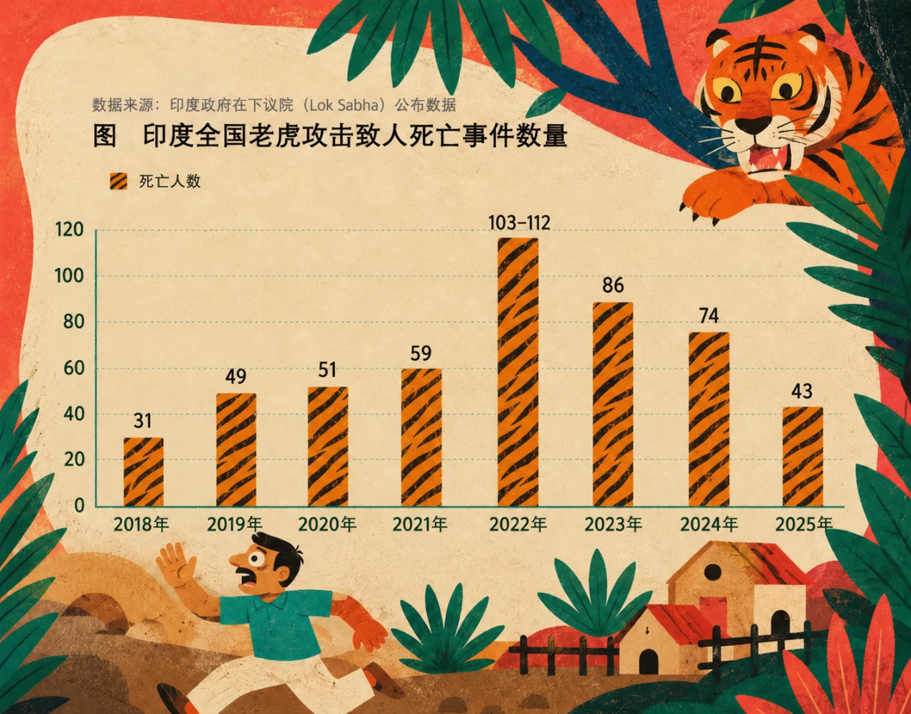
据印度环境部数据，2023年全年因老虎袭击死亡的人数达302人，而仅马哈拉施特拉邦一地，过去五年间因野生动物攻击就有420人死亡，其中248人死于老虎袭击。多位印度专家已公开呼吁，印度需要从“数量中心”政策转向更精细化的栖息地管理和冲突化解策略。
第三章 · 复苏
在全球老虎保护的大棋局中，中国东北虎保护的经验呈现出鲜明的特色——它不是俄罗斯“地广人稀”模式的中国版本，也不是印度“人口与老虎挤在同一片土地上”的困境复刻，而是一条结合了高强度科技赋能、系统性栖息地修复与主动式冲突管理的“第三条道路”。
🌲 01 从濒危到复苏：数字之外的增长密码
我的家乡经历了从濒临区域性灭绝到稳步复苏的关键转折。转折点在于2017年东北虎豹国家公园试点的启动——这一面积达1.41万平方公里的全球最大虎豹栖息地，横跨吉林和黑龙江两省，将原先被道路和农田分割的碎片化栖息地重新连接起来。通过生态廊道建设，碎片化的林地得以连通；通过退耕还林、天然林保护等工程，森林覆盖率提升至97.74%；通过“黄牛下山、舍饲圈养”工程，核心区野外散养黄牛全面清零；通过全域补饲与有蹄类重建工程，马鹿、梅花鹿、狍子、野猪等猎物种群数量均翻倍增长。
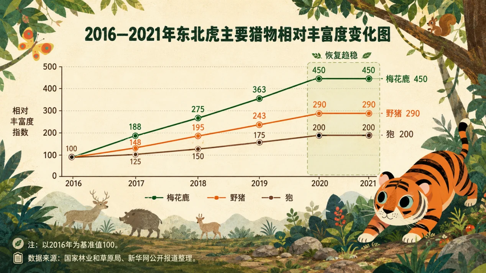
食物资源的恢复，让东北虎更愿意留在山林深处，也减少了它们进入人类活动区寻找食物的动机。
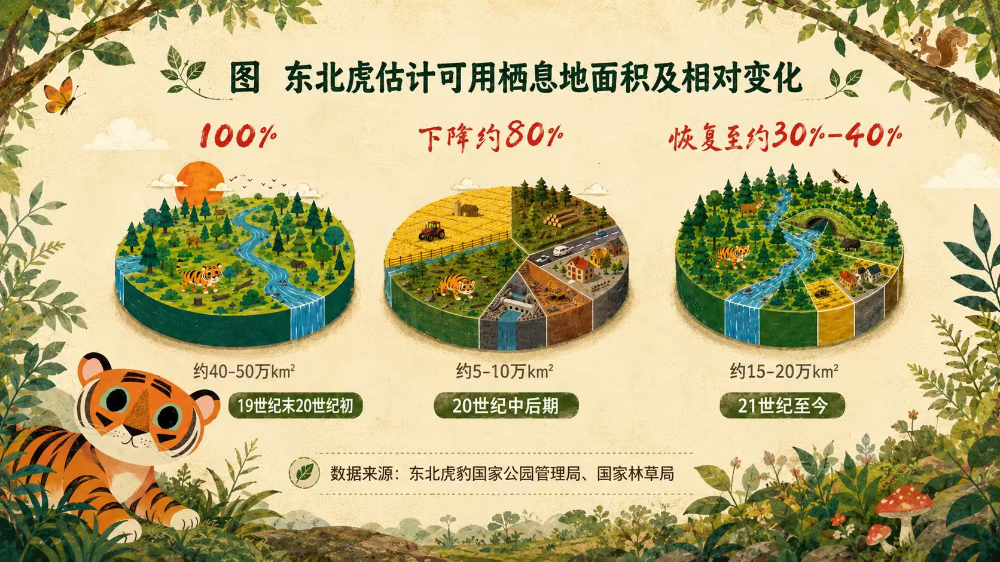
更重要的是，中国的保护措施使我家族的种群结构发生了质的改变——2023年一年间，公园内记录了8个东北虎繁殖家族、繁育幼崽20余只，幼崽成活率从建园初期的30%左右提升至50%以上，我的种群正在走向年轻化。
第三章 · 数字化监测
🛰️ 02 数字化武装：“天空地”一体化实时监测
中国东北虎保护中最具全球借鉴价值的元素，在于对科技手段的全域覆盖和系统整合。“天空地”一体化智能监测系统在1.41万平方公里林海中织成了一张全天候保护网——截至2026年，园区内已布设29872台联网红外相机，搭配26座专用通信基站和1564公里专用光缆，实现了监测数据实时回传和AI智能识别。在AI辅助下，系统可以在几秒内完成个体识别和位置标记，准确率超过90%。
01 全域前端感知层29872台相机 · 26座基站 · 1564km光缆，全天采集影像和坐标。
02 高速数据传输层专用光缆与基站实时回传监测画面。
03 AI智能研判层数秒内识别个体与位置，准确率超过90%。
04 分级预警推送层风险发生前，向村民和巡护人员推送预警。
05 线下应急处置层村民避险、巡护管控，隔离人畜和虎活动区。
06 数据统计优化层汇总记录、调整点位，持续迭代AI模型。
这套系统不仅用于种群监测，更构成了主动式人虎冲突预警的“第一道防线”。一旦监测到我靠近村落或农田，预警信息会第一时间推送到周边村民手机上。数据显示，该系统累计已发布人虎冲突预警12000余次，年均约1100次，2025年全年实现了园区内本土东北虎伤人事件0起。
在全球老虎分布国中，如此高度集成、全域覆盖、实时响应的科技监测体系是罕见的。印度虽然也在保护地使用红外相机和追踪设备，但其监测主要局限于保护区范围内，难以覆盖保护区外扩散的30%老虎。这套中国方案为全球老虎保护提供了一个“精细化管理的样板”。
🤝 03 人虎共存：中国交出特殊答卷
“东北虎伤人”事件降至零起——在全球老虎分布国中，这几乎是独一无二的成绩。中国的策略是“多维协同”：通过实时预警系统让人主动避险；通过生态廊道和猎物重建工程引导我远离人类聚居地；通过栖息地修复为我提供足够的捕食资源，减少其进入人类活动区的动机。这三层防线交织互补，构成了一个完整的人虎共存体系。
这一经验对印度、尼泊尔、泰国等人虎共存压力较高的老虎分布国具有直接的借鉴意义。在这些国家，随着老虎种群的恢复，老虎向保护区外扩散已造成越来越严重的人兽冲突——印度的解决方案侧重于政府补偿和土地共用的灵活性，而中国的方案则突出科技预警和栖息地管理的精细度。两种路径各有所长，但中国的方案在冲突预防的主动性上显示出明显的优势。
第五章 · 学术长河
📚 01 学术长河：一篇又一篇论文，接力讲述我的故事
我穿梭在密林深处，并不知道远在城市里的实验室里，一代又一代科学家正用笔尖和屏幕，一点一点地解读我的秘密。
早在上世纪50年代，人类对我的了解还很粗浅。但随着科技发展和保护意识提升，关于我的研究热度持续攀升。据知网平台收录，与“东北虎”相关的学术期刊、硕士论文、博士论文、会议论文已多达数千篇，密密麻麻地写满了我一个多世纪以来的命运轨迹。2022年，《野生动物学报》发表了《东北虎栖息地历史分布、种群数量动态及其野化放归进展》；2023年，《黑龙江科学》刊发了《东北虎栖息地适宜性研究概况与展望》。
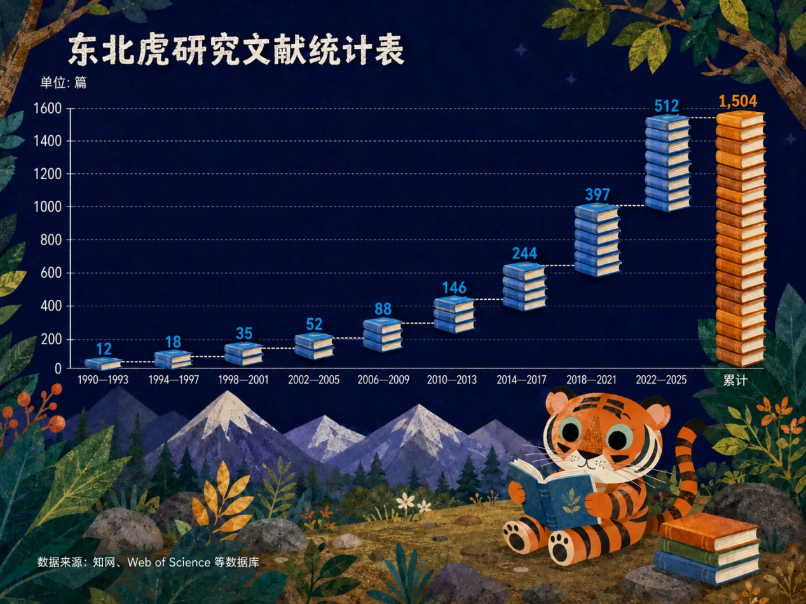
第五章 · 银幕与舞台
📚 学术研究的回声
北京师范大学虎豹研究团队的王天明教授指出，2000年至2020年间，超过50%的虎景观正在经历高水平的“人类干扰”，而且这种干扰在2010年之后愈发加剧——这也解释了为什么我的种群在过去数十年间一度跌至谷底。
但正是这些千余篇论文垒起的知识高地，让人类准确读懂了我们的生存困境，也为国家公园的建立提供了科学根基。每一篇论文都是一次回响——人类用数据和思考，回应我百年来的沉默与挣扎。
🎬 02 银幕与舞台：我的故事，正在被亿万人看见
我的故事，也正在被搬上银幕、写入诗歌、画进画卷，在人类的世界里反复回响。
2022年，B站出品的纪录片《众神之地》将我与野牦牛、白海豚、亚洲象并列为四种令人敬畏的动物。同年，纪录短片《女子巡“虎”队》在抖音平台获得接近1.5亿次传播量，镜头里那支黑龙江省东宁市林业和草原局的女子巡护队，穿着厚重的冬衣在零下20多度的深山里奔走巡护，打动了亿万网友。2026年，吉视传媒制作的《冬日野生东北虎》系列短视频在全球7088部参赛影片中脱颖而出，荣获第十六届北京国际电影节知识类三等创优作品奖。
早在1996年，我的野化驯练故事就登上了银幕——纪录片《东北虎野化驯练》斩获第3届中国电影华表奖优秀纪录片奖。2021年，导演耿军执导的电影《东北虎》在第24届上海国际电影节上荣获金爵奖最佳影片。评委会这样评价：“影片用象征性喜剧手法，表现了社会变革时期普通人的生活状态和对未来的向往。”
2026年5月，延边博物馆内墨香与丹青交织，一场名为“丹青绘虎豹 生态秀延边”的主题书画展在此拉开帷幕。这场展览以东北虎豹国家公园为核心意象，集结了百余幅艺术佳作，书法笔走龙蛇，国画气韵生动，油画色彩浓烈，水彩清透灵动，剪纸精巧传神——不同门类的艺术家们用各自的笔触与刀锋，定格了虎豹穿行林海的身姿，也描绘了延边山水的四季流转。展览持续整整42天，从暮春至初夏，不仅为本地市民提供了一场视觉盛宴，更吸引了众多外地游客专程前来。展厅内，观众在画作前驻足细品，在虎啸图前屏息凝神，在生态纪实类作品前低声交流。这场展览不仅是一次艺术的集会，更是一次生态意识的无声传递——让东北虎豹国家公园的保护理念，借着笔墨的力量，走进更多人的心里。
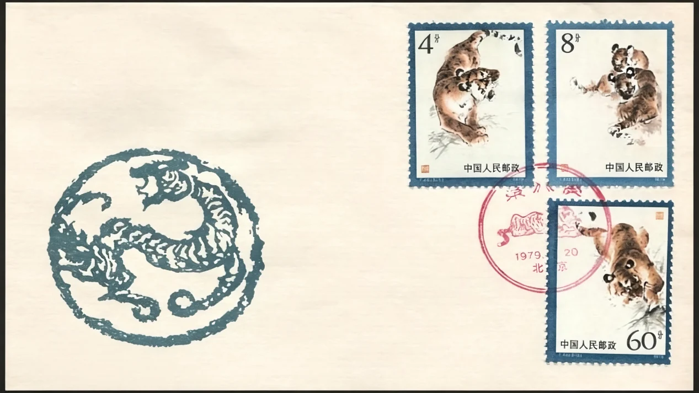
东北虎邮票与纪念币我的形象，还登上了邮票和纪念币。1979年，中国发行《东北虎》特种邮票，全套3枚，分别是《岩谷回声》《呼应原野》和《喧啸草莽》。2000年，我的身影再次出现在《国家重点保护野生动物（Ⅰ级）》特种邮票中。2022年，《国家公园》纪念邮票发行，我与大熊猫、海南长臂猿等物种一起出现在方寸之间。2024年，中国人民银行还发行了东北虎豹国家公园金银纪念币。
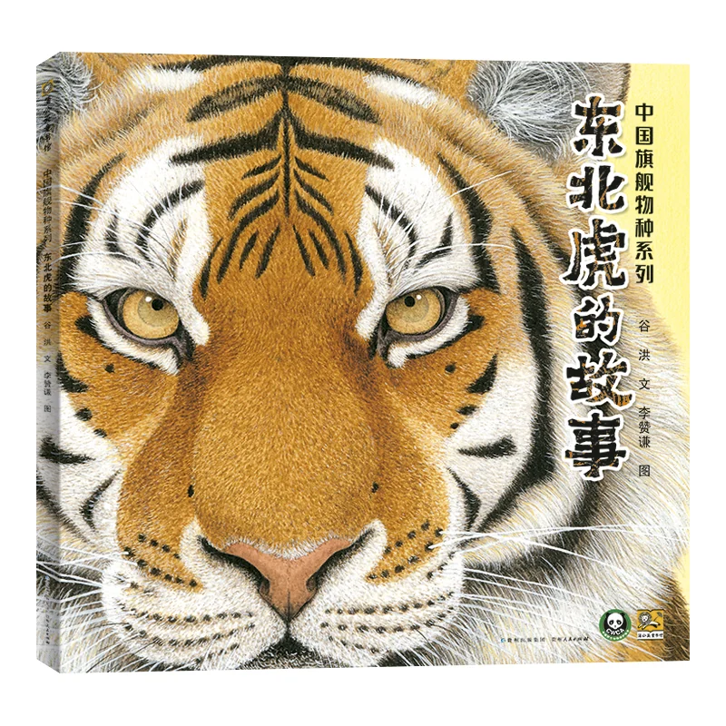
图书与绘本《东北虎的故事》我是东北虎，长白山的雪地上印着我的足迹。我的森林在变薄，同伴只剩几十只。科学家们追着我的踪迹，把冷冰冰的数据写成了绘本——于是，孩子们在画页里看见我的金黄条纹，听见我穿过雪原的喘息。
我不再是遥远的传说，而是他们睡前悄悄唤起的名字。当童年的耳朵为我停留，保护的声音就能翻过群山，传得更远。有一天，那些孩子长大，会记得：有一只虎，曾在书里奔跑，在人类心里从未真正消失。
——我正以故事的方式，重新活过。这一次，靠的不是爪牙，而是你们愿意倾听的那一瞬心动。
第五章 · 吉祥物
🐯 03 两只幼崽，成了全世界的吉祥物
2023年9月，黑龙江东北虎林园诞生了两只小虎崽。它们或许不知道，自己将承载一个国家的期待。
点击任意泡泡，查看公众对东北虎的情感关键词
2024年1月11日，2025年第九届亚洲冬季运动会吉祥物正式发布——“滨滨”和“妮妮”，两只可爱的东北虎，名字取自“哈尔滨欢迎您”的谐音。在中国传统文化中，虎是吉祥的象征，被赋予了“正直”“力量”和“勇气”的美好寓意。
2025年2月，当亚冬会在哈尔滨盛大开幕，我的两个“后辈”萌翻了全世界。从百年前那场持续不断的围猎到如今成为国际赛事吉祥物原型，我用了一个世纪才走完这条逆袭之路。
第五章 · 跨境外交
🌍 04 无国界的使者：中俄边境线上的外交官
如今的我，已然成为中俄两国之间最温情、最特别的外交使者。
我经常跨越中俄边境线，据监测，在被追踪的45只成年东北虎中，有42%的个体频繁跨越国境。2024年，中国和俄罗斯正式签署了关于建立大型猫科动物跨境自然保护地的协议，中国东北虎豹国家公园与俄罗斯豹地国家公园连成近1.7万平方公里的跨国连片保护地。
同年3月14日，中俄东北虎保护与恢复研究联合实验室在东北林业大学正式揭牌成立，由东北林业大学国家林业和草原局猫科动物研究中心与俄罗斯科学院生态与进化研究所共同组建。2025年7月29日，联合实验室发布了《人虎冲突解决方案》。
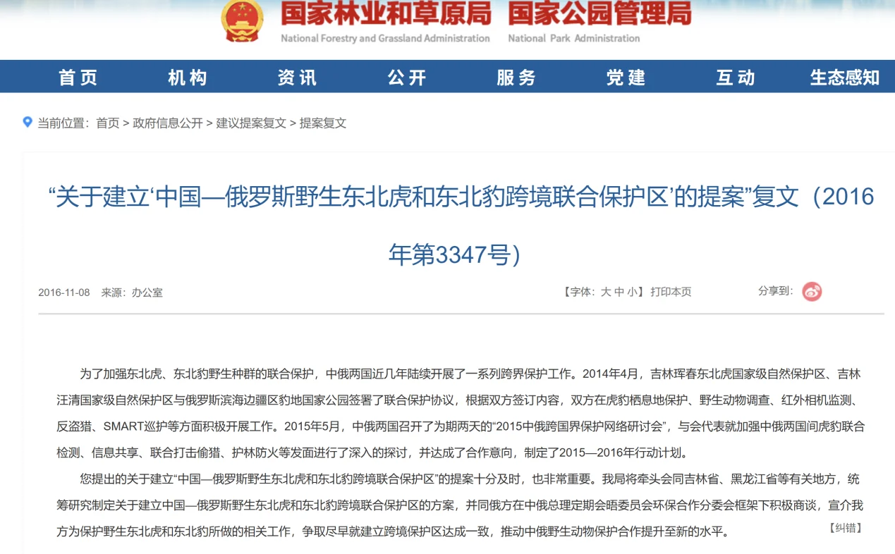
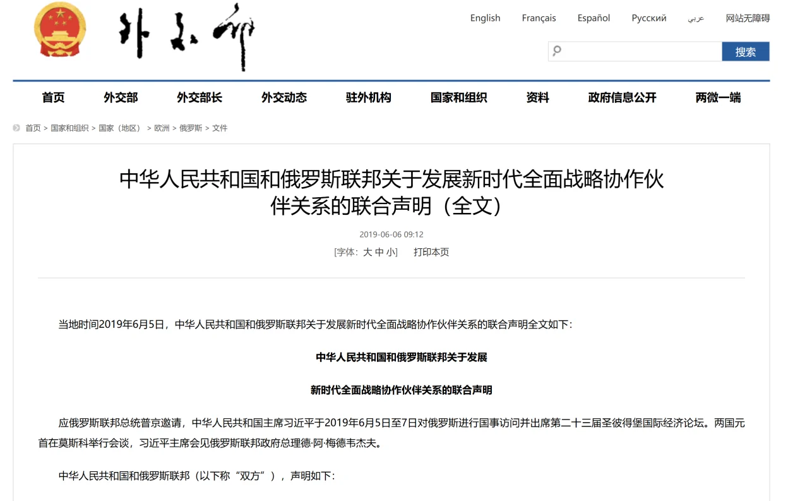
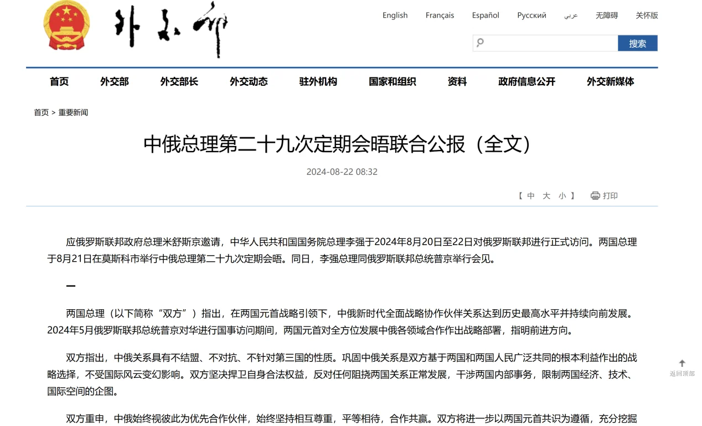
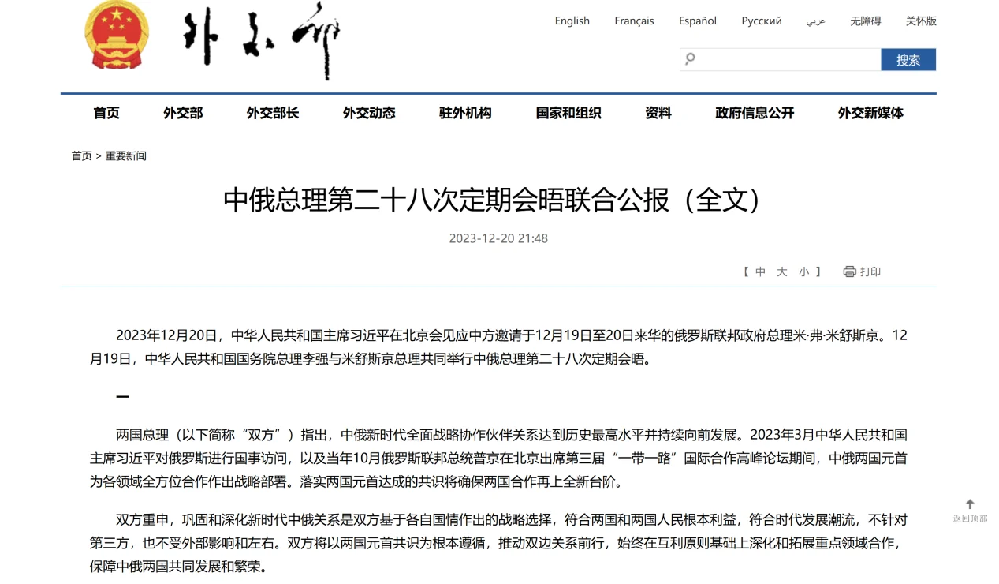
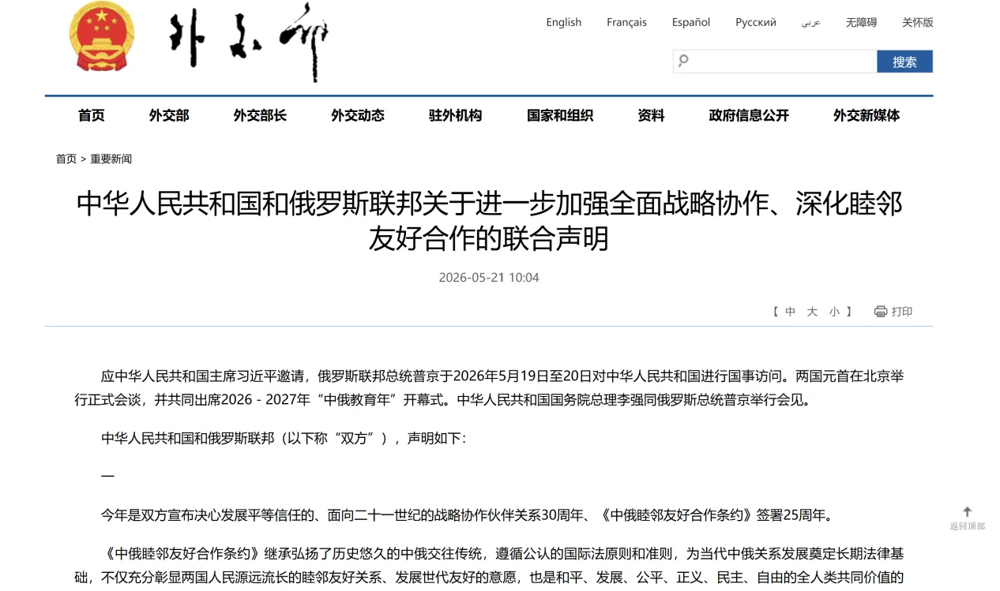
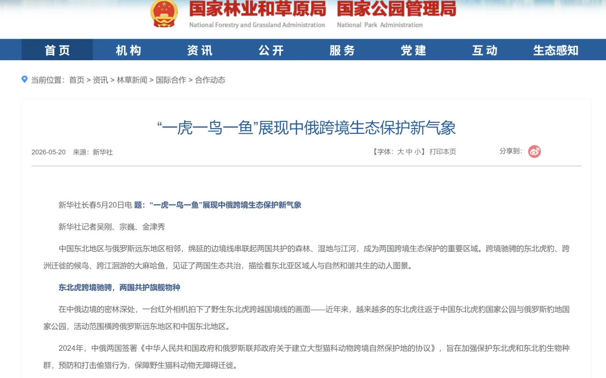
2026年5月，中俄两国发表联合声明，明确表示莫斯科和北京将进一步加强东北虎、东北豹、大熊猫、金丝猴、候鸟等野生动物的保护合作。
在人类的外交辞令中，我被正式写入了大国外交的篇章。从山林到国际舞台，从濒危物种到外交名片——我用自己的故事证明：生态保护，没有国界。
尾声
当一只东北虎踏过中俄边境，当五只幼崽跟在母虎身后穿过红外相机的视野，当一座座清山清套的足迹覆盖1.41万平方公里的冻土，当预警信号将人虎之间的安全距离调校得恰到好处——在这些无声的细节里，一个关于虎的未来正在被重新书写。
在全球野生虎仅剩约5574只的现实中，70只东北虎的确只是一个微小的数字。但中国经验所传递的核心信息，比数字本身更值得被记住：老虎保护不是人与虎的零和博弈，而是通过系统治理，实现种群恢复与人类安全的双重赢局。正如世界自然基金会全球总干事克思婷·斯海特所评价的：“从中国和泰国不断增长的老虎数量，到哈萨克斯坦上演的奇迹——让老虎在消失70年后重返故土，野生虎复苏的迹象毋庸置疑”。
这是林海深处传来的回声，也是一个对全球老虎保护事业有着深远意义的东方启示。
东北虎生存小游戏：穿过林海
游戏规则
野生东北虎寿命约15年，游戏中1年=3秒。小圆点中正向事件占51%，负向事件占49%。安全值或能量归零，挑战立即结束；否则持续到15岁“寿终正寝”。安全值和能量上限均为200。
键盘 ↑ ↓ ← → 或 WASD 控制移动。进入游戏后页面不会跟着方向键滚动。
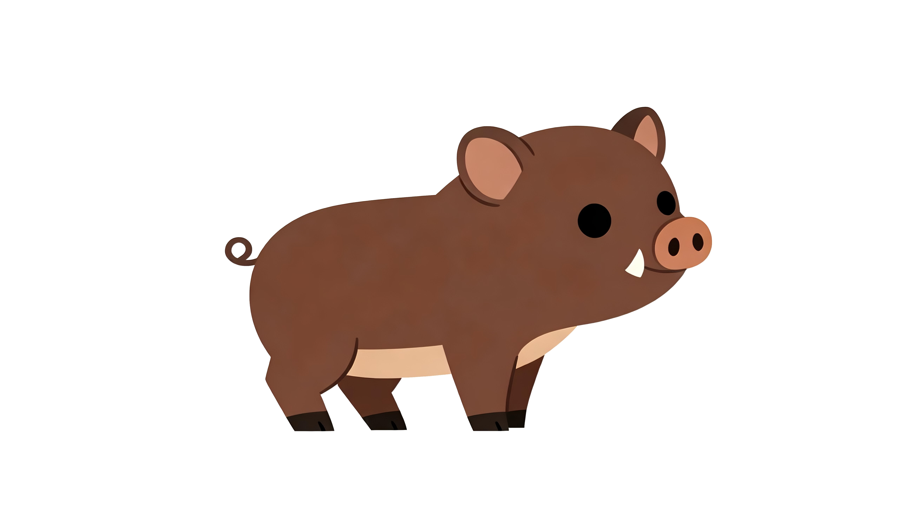
猎物小猪能量 +22｜积分 +22
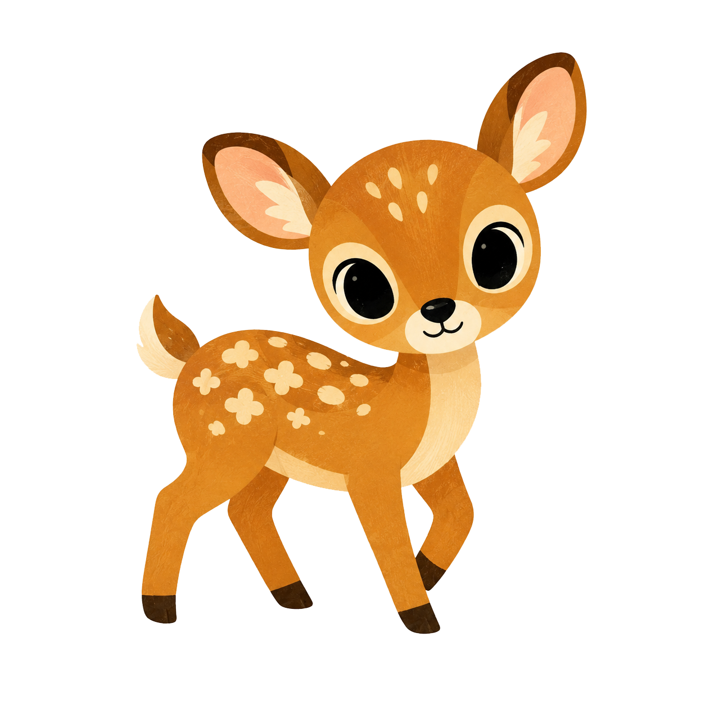
猎物小鹿能量 +22｜积分 +22
监测点安全 +20｜积分 +28
村庄安全 −22｜积分 −8
公路安全 −18｜能量 −8
盗猎陷阱安全 −32｜能量 −20
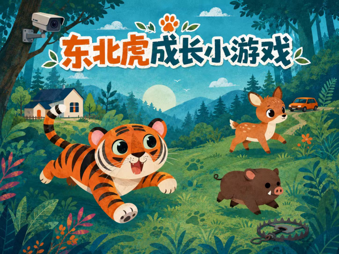
生存挑战结束
点击“开始游戏”进入独立全屏；使用方向键或 WASD 移动。